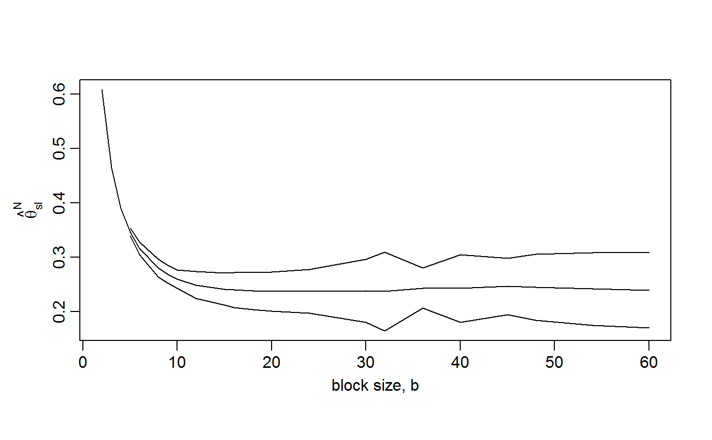
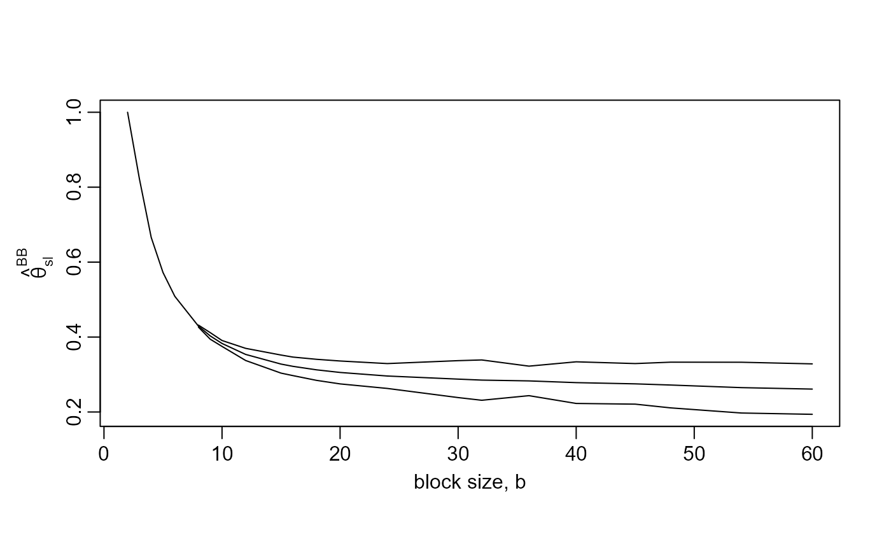
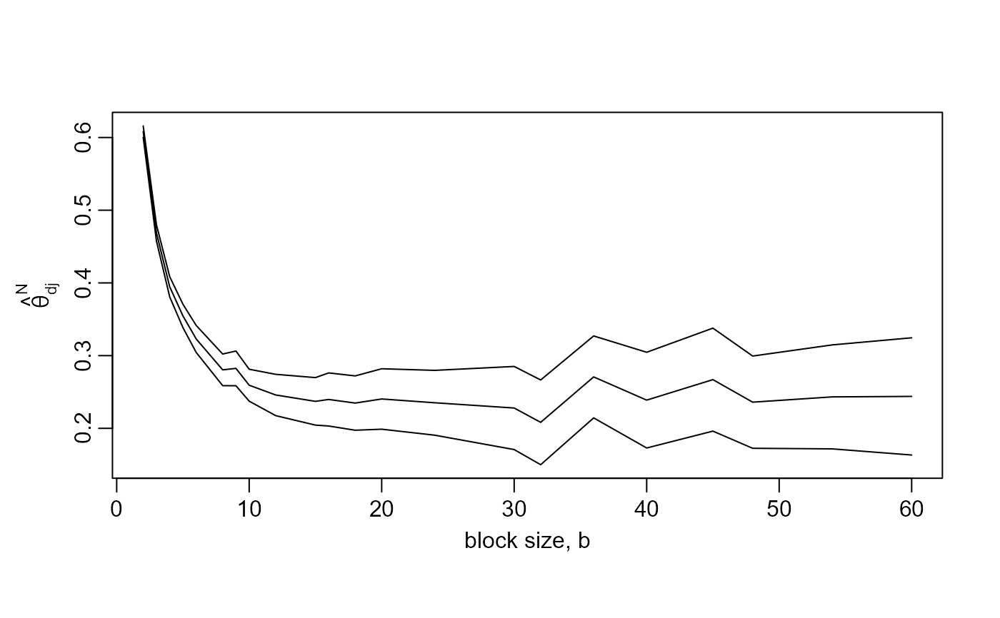

Creates data for a plot to aid the choice of the block length b to
supply to spm. The general idea is to select the smallest
value of b above which estimates of the extremal index \(\theta\)
appear to be constant with respect to b, taking into account sampling
variability. plot.choose_b creates the plot.
Arguments
- data
A numeric vector of raw data. No missing values are allowed.
- b
A numeric scalar. The block size.
- bias_adjust
A character scalar. Is bias-adjustment of the raw estimate of \(\theta\) performed using the bias-reduced estimator (
bias_adjust = "BB3"), derived in Section 5 of Berghaus and Bucher (2018); or a simpler version (bias_adjust = "BB1"), in which the raw estimate is multiplied by \((k-1) / k\), where \(k\) is the number of blocks; or the bias-adjustment of the empirical distribution function used to calculate the estimate, as detailed in Section 2 of Northrop (2015). When disjoint maxima are usedbias_adjust = "BB1"andbias_adjust = "N"give identical estimates of the Berghaus and Bucher (2018) variant, as explained at the end of Section 5 of Berghaus and Bucher (2018). Ifbias_adjust = "none"then no bias-adjustment is performed.- constrain
A logical scalar. If
constrain = TRUEthen any estimates that are greater than 1 are set to 1, that is, they are constrained to lie in (0, 1]. This is carried out after any bias-adjustment. Otherwise, estimates that are greater than 1 may be obtained.- varN
A logical scalar. If
varN = TRUEthen the estimation of the sampling variance of the Northrop (2015) estimator is tailored to that estimator. Otherwise, the sampling variance derived in Berghaus and Bucher (2018) is used. See Details for further information.- level
A numeric scalar in (0, 1). The confidence level required.
- interval_type
A character scalar:
"norm"for intervals of type (a),"lik"for intervals of type (b).- conf_scale
A character scalar. If
interval_type = "norm"thenconf_scaledetermines the scale on which we use approximate large-sample normality of the estimators to estimate confidence intervals of type (a).If
conf_scale = "theta"then confidence intervals are estimated for \(\theta\) directly. Ifconf_scale = "log"then confidence intervals are first estimated for \(\log\theta\) and then transformed back to the \(\theta\)-scale.Any bias-adjustment requested in the original call to
spm, using it'sbias_adjustargument, is automatically applied here.- type
A character scalar. The argument
typeto be passed toconf_intervalsin thechandwichpackage in order to estimate the likelihood-based intervals. Usingtype = "none"is not advised because then the intervals are based on naive estimated standard errors. In particular, if (the default)sliding = TRUEwas used in the call tospmthen the unadjusted likelihood-based confidence intervals provide vast underestimates of uncertainty.
Value
An object of class c("choose_b", "exdex") containing
- theta_sl,theta_dj
numeric
bby 3 matrices of estimates of \(\theta\) using sliding and disjoint blocks. Columns 1-3 relate to the estimatorsN2015,BB2018andBB2018b.- lower_sl,lower_dj
Similarly for the lower limits of the confidence intervals.
- upper_sl,upper_dj
Similarly for the upper limits of the confidence intervals.
- b
the input
b- call
the call to
choose_b.
Details
For each block size in b the extremal index \(\theta\)
is estimated using spm. The estimates of \(\theta\)
approximate conf% confidence intervals for \(\theta\) are
stored for plotting (by plot.choose_b)
to produce a simple graphical diagnostic to inform the choice of
block size. This plot is used to choose a block size above which the
underlying value of \(\theta\) may be approximately constant.
This is akin to a threshold stability plot: see Chapter 4 of Coles (2001),
for example.
The nature of the calculation of the sampling variances of the estimates
of \(\theta\) (see spm for details) means that
choose_b may be a little slow to run if b contains many
values, particularly if some of them are small.
For very small block sizes it may not be possible to estimate the
confidence intervals. See Details in spm.
For any such block sizes the intervals will be missing from the plot.
References
Coles, S. G. (2001) An Introduction to Statistical Modeling of Extreme Values, Springer-Verlag, London. doi:10.1007/978-1-4471-3675-0_3
Northrop, P. J. (2015) An efficient semiparametric maxima estimator of the extremal index. Extremes 18(4), 585-603. doi:10.1007/s10687-015-0221-5
Berghaus, B., Bucher, A. (2018) Weak convergence of a pseudo maximum likelihood estimator for the extremal index. Ann. Statist. 46(5), 2307-2335. doi:10.1214/17-AOS1621
See also
plot.choose_b to produce the block length diagnostic
plot.
Examples
# \donttest{
# Newlyn seas surges
# Plot like the top left of Northrop (2015)
# Remove the last 14 values because 2880 has lots of factors
b_vals <- c(2,3,4,5,6,8,9,10,12,15,16,18,20,24,30,32,36,40,45,48,54,60)
res <- choose_b(newlyn[1:2880], b_vals)
# Some b are too small for the sampling variance of the sliding blocks
# estimator to be estimated
plot(res)

plot(res, estimator = "BB2018")

plot(res, maxima = "disjoint")

# S&P 500 index: similar to Berghaus and Bucher (2018), Fig 4 top left
b_vals <- c(10, seq(from = 25, to = 350, by = 25), 357)
res500 <- choose_b(sp500, b_vals)
plot(res500, ylim = c(0, 1))
 plot(res500, estimator = "BB2018", ylim = c(0, 1))
# }
plot(res500, estimator = "BB2018", ylim = c(0, 1))
# }